v3.5.1 실제 브라우저 검수 자료
검증용 저장을 사용한 실제 화면입니다. held 이미지의 추가 대기는 캡처 전용이며 실제 타이밍 검사는 별도 기록입니다.
휴대폰 시작·두루마리·빠른 이동
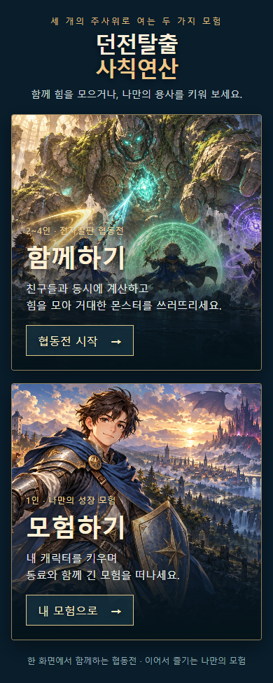
start-390.png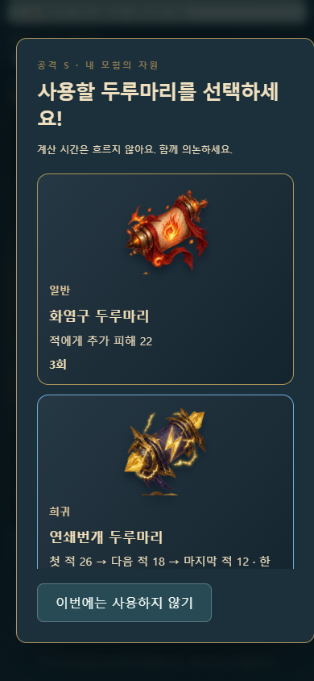
scroll-390.png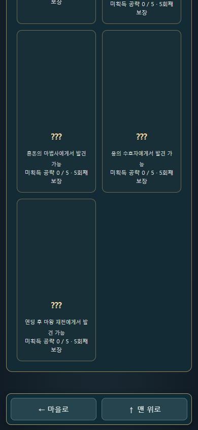
rpg-collection-390.png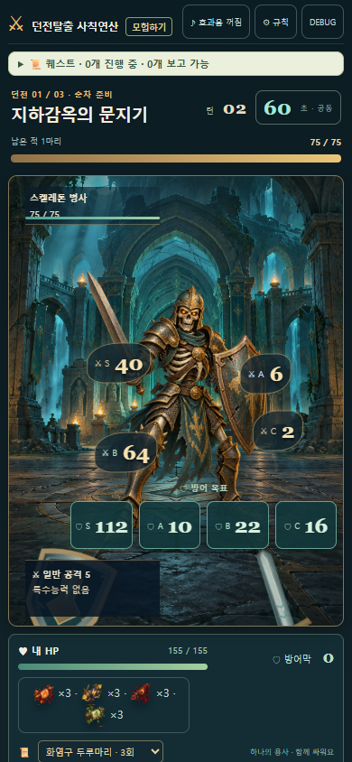
targets-390.png몬스터 얼굴·공격
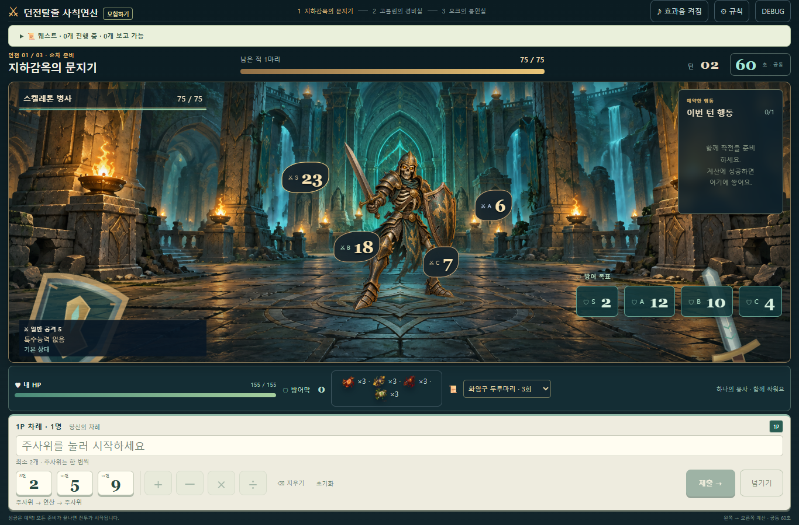
skeleton-targets.png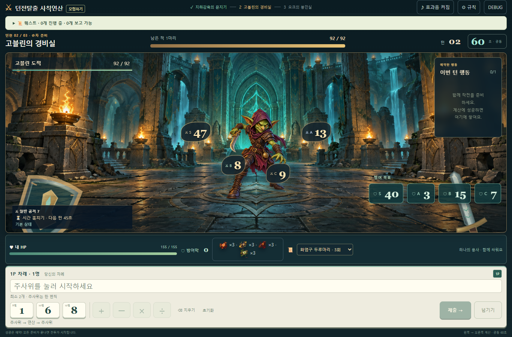
goblin-targets.png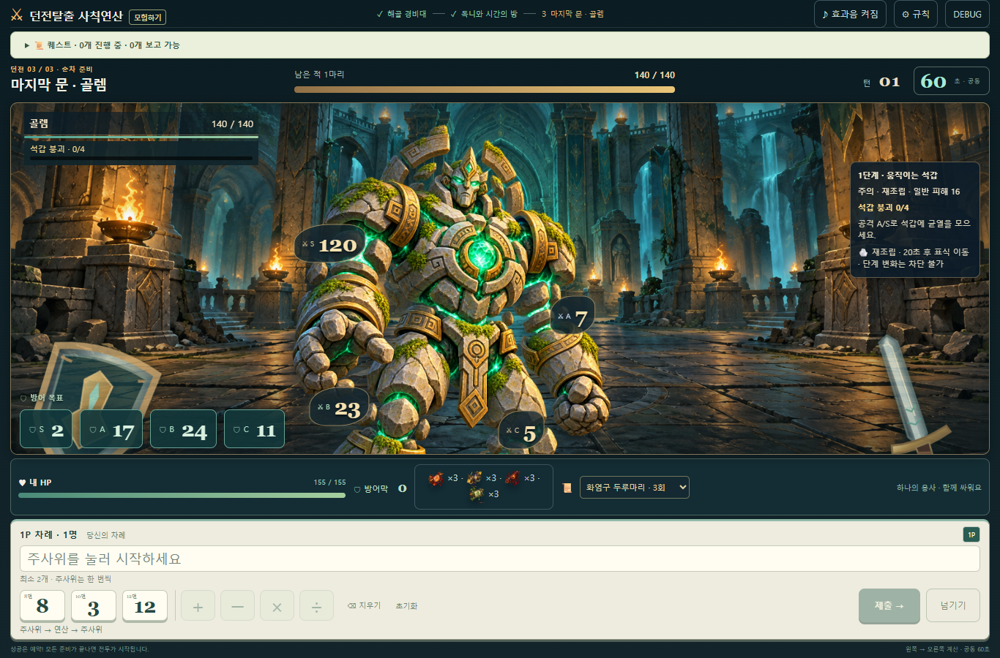
golem-targets.png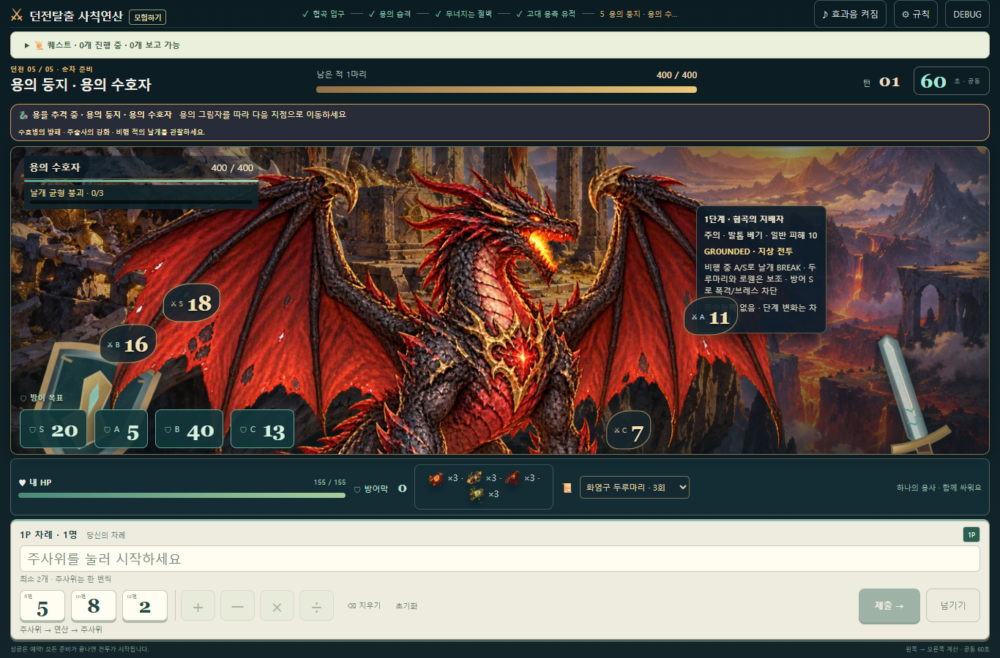
dragonGuardian-targets.png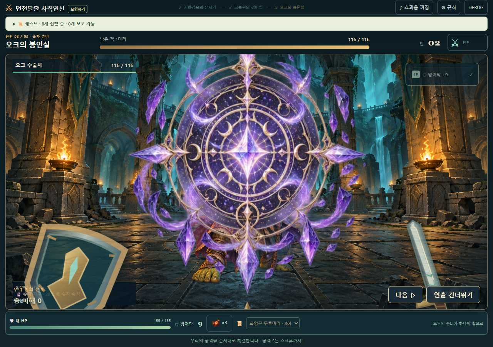
orc-held-attack.png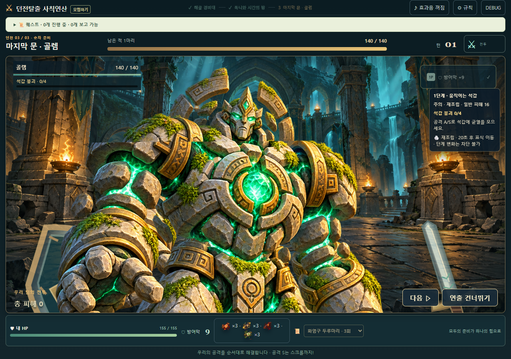
golem-held-attack.png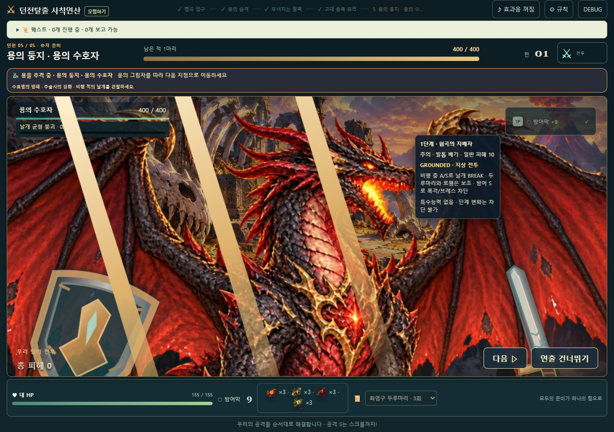
dragonGuardian-held-attack.png4인 연속 공격
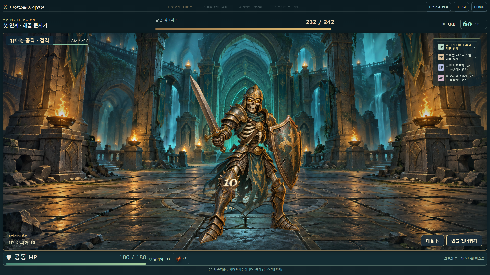
C-B-A-S-damage.png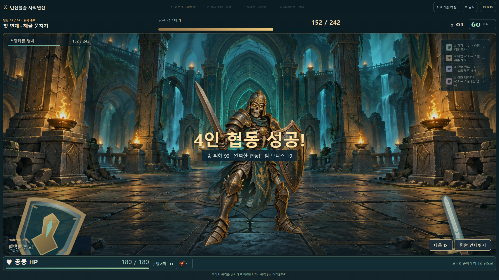
C-B-A-S-summary.png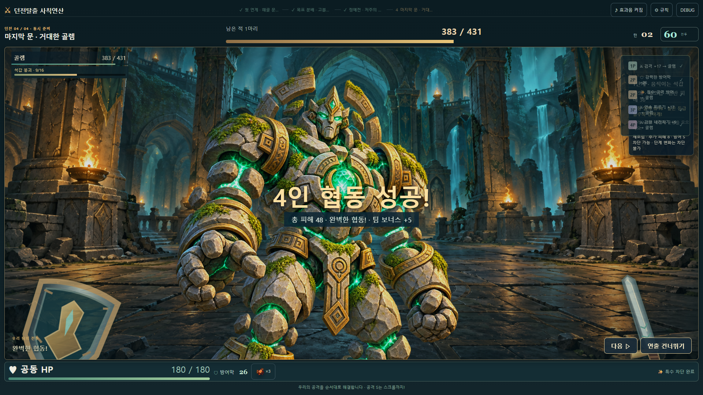
defense-S-summary.png